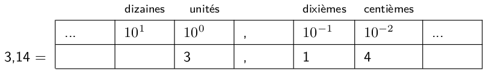

C16 Notion de nombre flottant
Activités
 Activité 1 : Attention aux nombres à virgules !
Activité 1 : Attention aux nombres à virgules !
- Ouvrir et terminal et lancer Python puis taper dans la console :
0.1 + 0.2. Le résultat obtenu est-il exactement 0.3 ? - Que donne
0.1 + 0.2 == 0.3? - Que donne
2**50+0.1-2**50? Quel est le résultat correct de ce calcul ? - Que donne
10**500? Et10.0**500? - Importer la fonction racine carré en tapant
from math import sqrt, que donne(sqrt(2))**2? Quel est le résultat correct de ce calcul ? - Quelle est l'écriture décimale de la fraction \(\dfrac{1}{3}\) ? Que donne le calcul de
1/3? - Quelle conclusion tirer de ces quelques exemples ?
Activité 2 : Nombres à virgules en binaire
De la même façon qu'en écriture décimale les chiffres situées à droite de la virgule correspondent aux puissances négatives de 10 :

C'est à dire :
\(3,14 = 3 \times 10^{0} + 1 \times 10^{-1} + 4 \times 10^{-2}\)
On peut écrire des nombres à virgule en binaire, avec les puissances négatives de 2 après la virgule. Par exemple :
\(0,1101_{2} = 2^{-1} + 2^{-2} + 2^{-4}\)
\(0,1101_{2} = 0,5_{10} + 0,25_{10} + 0,0625_{10}\)
\(0,1101_{2} = 0,8125_{10}\)
On dit que c'est l'écriture dyadique
-
Passer de l'écriture dyadique à l'écriture décimale
- Ecrire \(0,011_{2}\) en décimal
- Même question pour \(111,0101_{2}\)
-
Pour passer de l'écriture décimale à l'écriture dyadique :
 convertir la partie entière en écriture binaire
convertir la partie entière en écriture binaire
 multiplier par 2 la partie décimale, si ce produit est supérieur ou égal à 1, ajouter 1 à l'écriture dyadique sinon ajouter 0. Recommencer avec la partie décimale de ce produit tant qu'il est non nul.
multiplier par 2 la partie décimale, si ce produit est supérieur ou égal à 1, ajouter 1 à l'écriture dyadique sinon ajouter 0. Recommencer avec la partie décimale de ce produit tant qu'il est non nul.Par exemple pour écrire \(17,3125\) en écriture dyadique :
conversion de la partie entière en binaire \(17_{10}\) = \(10001_{2}\)
multiplications successives de la partie décimale Produit Comparaison à 1 Chiffre \(0,3125\times2 = 0,625\) \(0,625<1\) 0 \(0,625\times2 = 1,25\) \(1,25\geq1\) 1 \(0,25\times2 = 0,5\) \(0,5<1\) 0 \(0,5\times2 = 1\) \(1\geq1\) 1 L'algorithme s'arrête car la partie décimal est nulle et donc \(17,3125 = 10001,0101_2\). Utiliser cette méthode pour donner l'écriture dyadique des nombres suivants :
- \(2,5\)
- \(0,78125\)
- \(42,15625\)
-
Que peut-on dire de l'écriture décimale de la fraction \(\dfrac{1}{3}\) ?
- Donner l'écriture décimale de \(\dfrac{1}{10}\), que peut-on dire de l'écriture dyadique de ce nombre ?
Activité 3 : Flottants
On donne ci-dessous un rappel de cours (de collège) concernant la notation scientifique qui est essentielle à la compréhension de la représentation des nombres flottants dans un ordinateur. Ce rappel de cours peut être complété par vos propres révisions ou recherches sur le Web.
Rappel
Les nombres très grands (ou très petits) ont une écriture décimale difficile à manipuler, à lire ou à utiliser on préfère les écrire en notation scientifique c'est à dire sous la forme : $$ a \times 10^n $$ où \(a\) appelé mantisse est un nombre compris entre 1 et 10 et \(n\) appelé exposant est un entier relatif. Par exemple :
- \(760000000 = 7,6 \times 10^8\).
- \(0,00000000049 = 4,9 \times 10^{-10}\)
Les nombres flottants suivent le principe précédent mais utilisent la base 2, de plus :
- le nombre de chiffres de la mantisse est limité
- l'exposant s'écrit avec un nombre limité de bits.
- un bit est réservé pour le signe du nombre
- On suppose qu'on se limite à une mantisse de 8 bits, quel sera l'écriture de \(0,1\) dans ce format ?
- Que peut-on en déduire ?
- Le problème sera-t-il résolu en augmentant la taille de la mantisse ?
- Expliquer pourquoi certains calculs comme
42.0**200provoquent un OverflowError.
Note
On remarquera que 42**200 est calculé sans erreur, en effet Python utilise une représentation des entiers dynamiques. Le nombre de bits alloué à la représentation d'un entier évolue donc avec la taille de celui ci et n'est limité que par la mémoire de l'ordinateur.
La vidéo suivante résume l'ensemble des trois activités de ce chapitre :
Note
Aucune connaissance n'est exigée au niveau de la première NSI à ce sujet, mais les ordinateurs modernes utilisent la norme IEEE-754 dans laquelle les flottants en simple précision sont représentées sur 32 bits :
- 1 bit pour le signe
- 23 bits pour la mantisse
- 8 bits pour l'exposant
L'objectif étant de garantir qu'un même calcul mené sur des ordinateurs différents donne le même résultat.
Cours
Vous pouvez télécharger une copie au format pdf du diaporama de synthèse de cours présenté en classe :
Attention
Ce diaporama ne vous donne que quelques points de repères lors de vos révisions. Il devrait être complété par la relecture attentive de vos propres notes de cours et par une révision approfondie des exercices.
QCM
1. Le nombre à virgule \(0,3_{10}\) :
- a) est représenté exactement en machine par \(3/10\)
- b) est représenté exactement en machine par \(0,11_{2}\)
- c) ne peut pas être représenté exactement en machine car c'est un nombre à virgule
- d) ne peut pas être représenté exactement car son écriture dyadique est illimitée
- a)
est représenté exactement en machine par \(3/10\) - b)
est représenté exactement en machine par \(0,11_{2}\) - c)
ne peut pas être représenté exactement en machine car c'est un nombre à virgule - d) ne peut pas être représenté exactement car son écriture dyadique est illimitée
2. Le nombre à virgule \(0,25_{10}\) :
- a) est représenté exactement en machine par \(0,1_{2}\)
- b) est représenté exactement en machine par \(0,01_{2}\)
- c) ne peut pas être représenté exactement en machine car c'est un nombre à virgule
- d) ne peut pas être représenté exactement car son écriture dyadique est illimitée
- a)
est représenté exactement en machine par \(0,1_{2}\) - b) est représenté exactement en machine par \(0,01_{2}\)
- c)
ne peut pas être représenté exactement en machine car c'est un nombre à virgule - d)
ne peut pas être représenté exactement car son écriture dyadique est illimitée
3. Quelle est l'écriture décimal de \(0,11_{2}\) ?
- a) \(0,5\)
- b) \(0,25\)
- c) \(0,75\)
- d) \(0,3\)
- a)
\(0,5\) - b)
\(0,25\) - c) \(0,75\)
- d)
\(0,3\)
4. Quelle est l'écriture dyadique de \(0,625_{10}\) ?
- a) \(0,101_{2}\)
- b) \(0,011_{2}\)
- c) \(0,110_{2}\)
- d) \(0,111_{2}\)
- a) \(0,101_{2}\)
- b)
\(0,011_{2}\) - c)
\(0,110_{2}\) - d)
\(0,111_{2}\)
5. Un seul des nombres suivants n'a pas une écriture finie en base 2, lequel ?
- a) \(1,25_{10}\)
- b) \(1,5_{10}\)
- c) \(1,6_{10}\)
- d) \(1,75_{10}\)
- a)
\(1,25_{10}\) - b)
\(1,5_{10}\) - c) \(1,6_{10}\)
- d)
\(1,75_{10}\)
Exercices
Exercice 1 : Ecriture décimale et dyadique
-
Donner l'écriture décimale des nombres suivants :
- \(0,10111_{2}\)
- \(0,00011_{2}\)
- \(0,11111_{2}\)
-
Donner l'écriture dyadique des nombres suivants :
- \(12,25_{10}\)
- \(42,296875_{10}\)
- \(0,7_{10}\)
Exercice 2 : Un peu de programmation Python
-
Ecrire une fonction python
decimale(chiffres_binaires)qui prend en argument une listechiffres_binairesreprésentant les chiffres situés après la virgule en écriture binaire et renvoie l'écriture décimale. Par exemples :decimale([0,1])doit renvoyer \(0,25\) en effet : \(0,01_{2} = 2^{-2} = 0,25\)decimale([1,1,0,1])doit renvoyer \(0,8125\) en effet : \(0,1101_{2} = 2^{-1} + 2^{-2} + 2^{-4} = 0,8125\)
-
Ecrire une fonction python
dyadique(chiffres_decimaux,taille_max)qui prend en argument une listechiffres_decimauxreprésentant les chiffres situés après la virgule en écriture décimale et renvoie l'écriture dyadique en se limitant à une mantisse detaille_max. Par exemples :dyadique([7,5],12)doit renvoyer[1,1]car \(0,75_{10} = 0,11_{2}\)dyadique([1],12)doit renvoyer[0,0,0,1,1,0,0,1,1,0,0,1]car \(0,1_{10} = 0,000110011001100110011..._{2}\) et on se limite à 12 chiffres après la virgule.
Aide
Revoir si besoin l'algorithme vu en cours pour passer de l'écriture décimale à l'écriture dyadique.
Exercice 3 : Comparaisons entre flottants
On considère le programme Python suivant :
1 2 3 4 5 6 | |
- Combien de fois devrait-on passer dans la boucle
while? et quel est l'affichage attendu ? - Recopier et executer ce programme. Que se passe-t-il ? pourquoi ?
- Remplacer le test de la ligne 3 par
while x > 0. Expliquer le résultat obtenu
Exercice 4 : Norme IEEE-754
-
Faire vos propres recherches sur la norme IEEE-754 au format simple précision.
Aide
On pourra commencer par la page wikipedia
-
Donner la valeur décimale des nombres suivants codé sous le format simple précision de la norme IEEE-754 :
-
\[\underbrace{1}_{\mathrm{signe}} \quad \underbrace{01111101}_{\mathrm{exposant\: décalé}} \quad \underbrace{01101100000000000000000}_{\mathrm{mantisse}}\]
-
\[1 \quad 10001001 \quad 11000000000000000000000\]
-
-
Donner la représentation flottante en simple précision au format de la norme IEEE-754 de \(-16,75\).